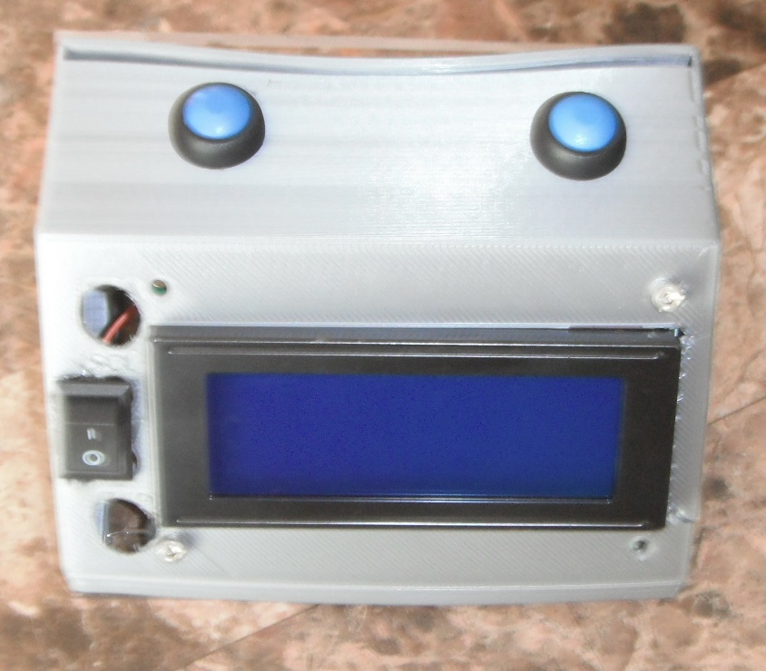
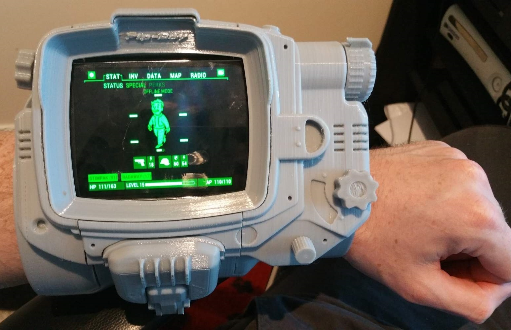
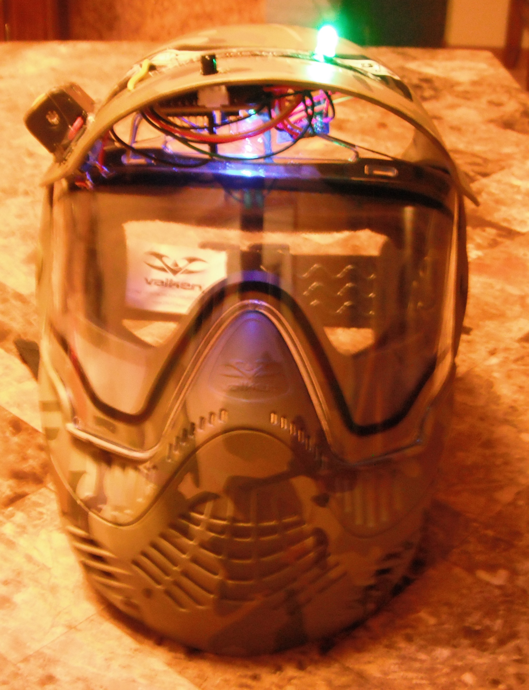
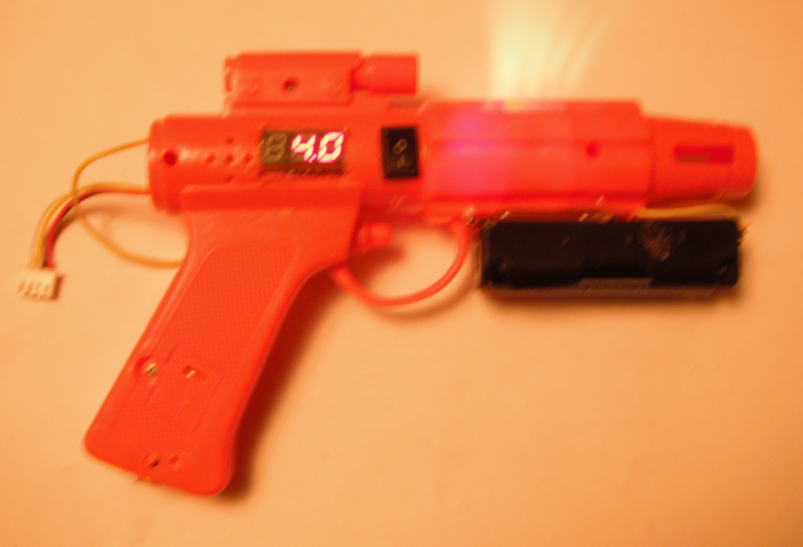

| Name | Image | Description |
|---|---|---|
| Raspberry pi 3.0 | | connects to router via RJ45 cable and runs an apache web-server and a node.js web-server |
| Rifle | | connects to web-server (via esp8266) and shoots IR pulses at enemy |
| Flags | | Will change to team color (red/green/blue) and rotates when hit. Game may be over when all flags are same color. |
| Game Configurator |  | Allows the administrator to remotely start the game, also contains an lcd display to show ip address of raspberry pi |
| Smart Device | Provides health/ammo information to the player and allows them to increase their health or reload |
| Pipboy (android device) |  | Provides a wireless network and contains an apache web-server |
| VIP Helmet |  | connects to web-server (via esp8266) and receives IR "hits" via arduino |
| Fake Bomb | Disarm the bomb to win the game | |
| Self propelled vehicle |  | connects to web-server (via esp8266) and accepts wsda commands from an alternate (node.js) web-server |
| Pistol |  | does not connect to web-server, and uses an arduino mini-pro to fire |
| Sentinel | This device will fire when movement is detected | |
| Stimpak | Reset the health points of a player |
{kind=link}
{kind=link}
{kind=link}